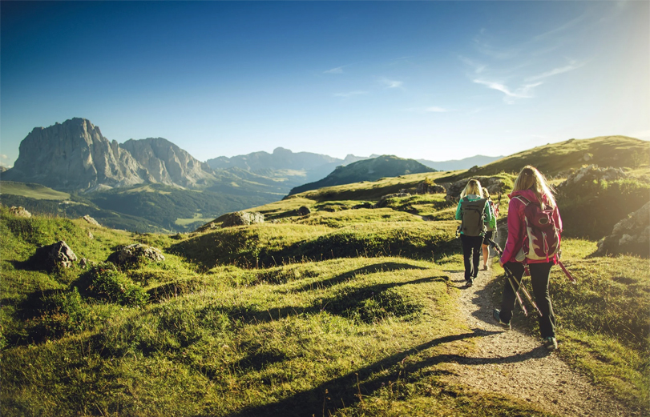
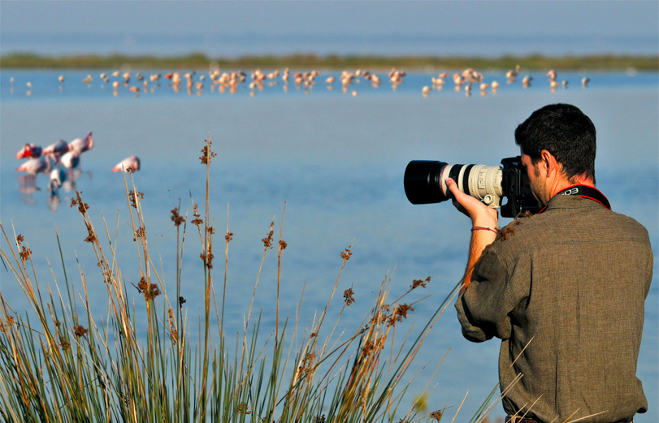
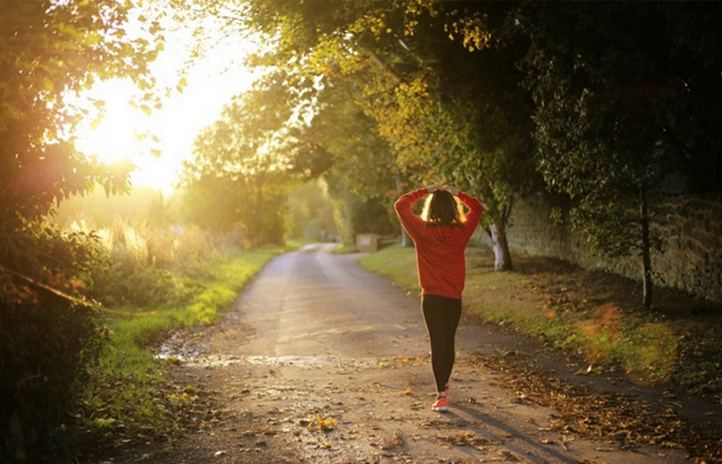
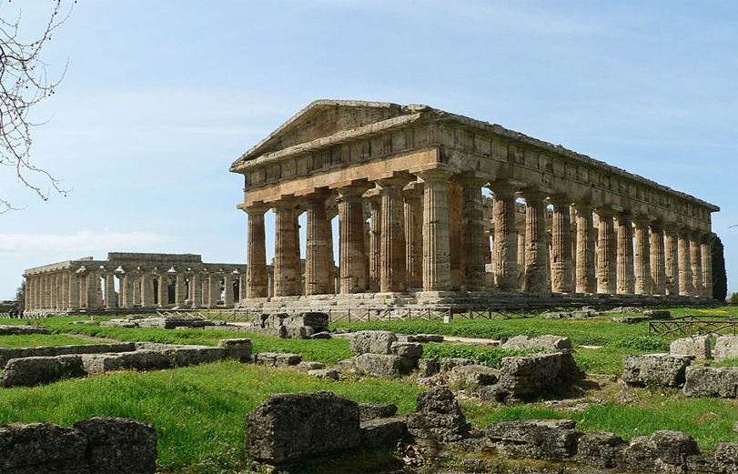

Biodiversità, paesaggi, tradizioni, natura, cultura.
I parchi nazionali italiani offrono esperienze a contatto con la natura che uniscono attività ricreative, educative e culturali. Escursioni, visite guidate e laboratori permettono di esplorare paesaggi diversi e conoscere flora, fauna e geologia. Sport all’aria aperta, birdwatching e attività acquatiche si affiancano a eventi legati a tradizioni locali e prodotti tipici. Alcuni itinerari includono siti storici, offrendo un'immersione completa tra natura e cultura.
Esplorali insieme a noi!

Escursioni e Trekking
Escursioni e Trekking sono attività all’aria aperta che consistono nel camminare lungo sentieri naturali, montani o collinari, per esplorare la natura, ammirare panorami suggestivi e mantenersi in forma.
Le escursioni si riferiscono generalmente a camminate di breve durata e difficoltà contenuta, accessibili a tutti e solitamente concentrate in una singola giornata.
Il trekking, invece, è un’attività più impegnativa, che può durare diversi giorni e richiede una buona preparazione fisica, attrezzatura adeguata e, a volte, pernottamenti in rifugi o bivacchi.

Visite Guidate e Laboratori Didattici
Sono esperienze educative pensate per approfondire la conoscenza di luoghi, culture, storia e natura in modo coinvolgente e interattivo. Le visite guidate permettono di esplorare musei, siti archeologici, città o ambienti naturali accompagnati da esperti che illustrano curiosità e aspetti storici, artistici o scientifici. I laboratori didattici, invece, offrono un approccio pratico e creativo all’apprendimento, coinvolgendo attivamente i partecipanti, soprattutto bambini e ragazzi, attraverso attività manuali, esperimenti e giochi a tema.

Birdwatching
È l’attività di osservare gli uccelli nel loro habitat naturale, armati di binocolo, pazienza e curiosità. Si pratica in ambienti come boschi, zone umide, montagne o coste, e permette di entrare in sintonia con la natura, imparando a riconoscere le diverse specie attraverso il canto, il volo e i comportamenti. È un’attività rilassante e accessibile a tutti, che unisce passione per la fauna selvatica, spirito di osservazione e rispetto per l’ambiente.

Sport all’Aria Aperta
Comprende tutte quelle attività fisiche praticate in ambienti naturali o spazi esterni, come parchi, montagne, spiagge o laghi. Queste discipline uniscono il benessere del movimento alla libertà e all’energia del contatto con la natura. Che si tratti di corsa, ciclismo, arrampicata, canoa o yoga nel parco, lo sport outdoor favorisce uno stile di vita attivo, migliora l’umore e consente di vivere appieno il territorio circostante.

Siti Archeologici e Borghi Storici
Offrono un viaggio nel tempo attraverso luoghi ricchi di fascino, memoria e cultura. I siti archeologici raccontano le antiche civiltà attraverso resti, monumenti e reperti che testimoniano la vita del passato. I borghi storici, con le loro stradine acciottolate, le architetture tradizionali e l’atmosfera autentica, custodiscono tradizioni, storie locali e identità profonde. Visitare questi luoghi significa immergersi nella storia, riscoprendo le radici di un territorio e il suo patrimonio culturale.